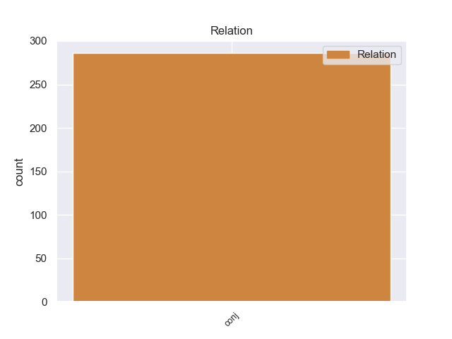
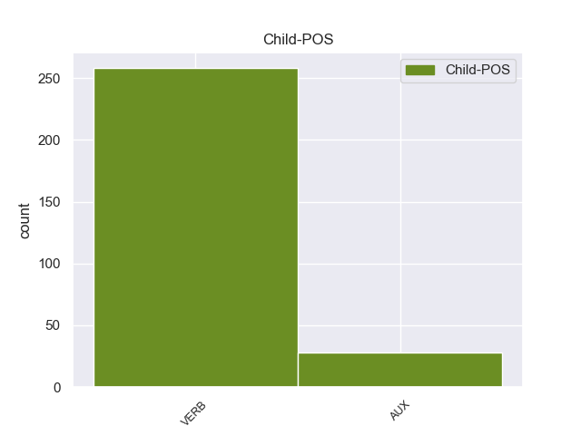

Distribution of features within this leaf


Agreement Rules sorted by frequency.
- When the dependent token is the conjunct(conj) of the head token,
1 Υπάρχει υπάρχω VERB _ Aspect=Imp|Mood=Ind|Number=Sing|Person=3|Tense=Pres|VerbForm=Fin|Voice=Act 0 _ _ _
2 μια _ _ _ _ 0 _ _ _
3 άλλη _ _ _ _ 0 _ _ _
4 πλευρά _ _ _ _ 0 _ _ _
5 της _ _ _ _ 0 _ _ _
6 υπόθεσης _ _ _ _ 0 _ _ _
7 , _ _ _ _ 0 _ _ _
8 η _ _ _ _ 0 _ _ _
9 οποία _ _ _ _ 0 _ _ _
10 , _ _ _ _ 0 _ _ _
11 δυστυχώς _ _ _ _ 0 _ _ _
12 , _ _ _ _ 0 _ _ _
13 γεννά γενω VERB _ Aspect=Imp|Mood=Ind|Number=Sing|Person=3|Tense=Pres|VerbForm=Fin|Voice=Act 1 conj _ _
14 την _ _ _ _ 0 _ _ _
15 υποψία _ _ _ _ 0 _ _ _
16 ότι _ _ _ _ 0 _ _ _
17 η _ _ _ _ 0 _ _ _
18 πρόνοια _ _ _ _ 0 _ _ _
19 σχετικά _ _ _ _ 0 _ _ _
20 με _ _ _ _ 0 _ _ _
21 τις _ _ _ _ 0 _ _ _
22 προϋποθέσεις _ _ _ _ 0 _ _ _
23 ελεύθερης _ _ _ _ 0 _ _ _
24 διεξαγωγής _ _ _ _ 0 _ _ _
25 του _ _ _ _ 0 _ _ _
26 κοινοβουλευτικού _ _ _ _ 0 _ _ _
27 έργου _ _ _ _ 0 _ _ _
28 δεν _ _ _ _ 0 _ _ _
29 απασχόλησε _ _ _ _ 0 _ _ _
30 επαρκώς _ _ _ _ 0 _ _ _
31 την _ _ _ _ 0 _ _ _
32 εισαγγελική _ _ _ _ 0 _ _ _
33 αρχή _ _ _ _ 0 _ _ _
34 : _ _ _ _ 0 _ _ _
Disagree Examples:
1 Εσείς _ _ _ _ 0 _ _ _
2 αυξηθήκατε αυξάνω VERB VERB Aspect=Perf|Mood=Ind|Number=Plur|Person=2|Tense=Past|VerbForm=Fin|Voice=Pass 0 _ _ _
3 περισσότερο _ _ _ _ 0 _ _ _
4 , _ _ _ _ 0 _ _ _
5 έχετε έχω VERB VERB Aspect=Imp|Mood=Ind|Number=Plur|Person=2|Tense=Pres|VerbForm=Fin|Voice=Act 2 conj _ _
6 την _ _ _ _ 0 _ _ _
7 τρόικα _ _ _ _ 0 _ _ _
8 και _ _ _ _ 0 _ _ _
9 την _ _ _ _ 0 _ _ _
10 προεδρική _ _ _ _ 0 _ _ _
11 τριάδα _ _ _ _ 0 _ _ _
12 , _ _ _ _ 0 _ _ _
13 αλλά _ _ _ _ 0 _ _ _
14 είμαστε _ _ _ _ 0 _ _ _
15 σχετικά _ _ _ _ 0 _ _ _
16 κερδισμένοι _ _ _ _ 0 _ _ _
17 . _ _ _ _ 0 _ _ _
1 Το _ _ _ _ 0 _ _ _
2 ευρωπαϊκό _ _ _ _ 0 _ _ _
3 πρόγραμμα _ _ _ _ 0 _ _ _
4 ΝΕΟΛΑΙΑ _ _ _ _ 0 _ _ _
5 εγκρίθηκε εγκρίνω VERB VERB Aspect=Perf|Mood=Ind|Number=Sing|Person=3|Tense=Past|VerbForm=Fin|Voice=Pass 0 _ _ _
6 σ _ _ _ _ 0 _ _ _
7 τις _ _ _ _ 0 _ _ _
8 13_Απριλίου_2000 _ _ _ _ 0 _ _ _
9 και _ _ _ _ 0 _ _ _
10 έχει έχω VERB VERB Aspect=Imp|Mood=Ind|Number=Sing|Person=3|Tense=Pres|VerbForm=Fin|Voice=Act 5 conj _ _
11 διάρκεια _ _ _ _ 0 _ _ _
12 έως _ _ _ _ 0 _ _ _
13 το _ _ _ _ 0 _ _ _
14 2006 _ _ _ _ 0 _ _ _
15 . _ _ _ _ 0 _ _ _
1 Θύμισε _ _ _ _ 0 _ _ _
2 ωστόσο _ _ _ _ 0 _ _ _
3 ότι _ _ _ _ 0 _ _ _
4 " _ _ _ _ 0 _ _ _
5 το _ _ _ _ 0 _ _ _
6 προηγούμενο _ _ _ _ 0 _ _ _
7 έτος _ _ _ _ 0 _ _ _
8 είχαν έχω AUX AUX Aspect=Imp|Mood=Ind|Number=Plur|Person=3|Tense=Past|VerbForm=Fin|Voice=Act 0 _ _ _
9 παραγγελθεί _ _ _ _ 0 _ _ _
10 εμβόλια _ _ _ _ 0 _ _ _
11 τα _ _ _ _ 0 _ _ _
12 οποία _ _ _ _ 0 _ _ _
13 πετάχτηκαν _ _ _ _ 0 _ _ _
14 , _ _ _ _ 0 _ _ _
15 και _ _ _ _ 0 _ _ _
16 δεν _ _ _ _ 0 _ _ _
17 είναι είμαι AUX AUX Aspect=Imp|Mood=Ind|Number=Sing|Person=3|Tense=Pres|VerbForm=Fin|Voice=Pass 8 conj _ _
18 ωραίο _ _ _ _ 0 _ _ _
19 , _ _ _ _ 0 _ _ _
20 όπως _ _ _ _ 0 _ _ _
21 τόνισε _ _ _ _ 0 _ _ _
22 , _ _ _ _ 0 _ _ _
23 το _ _ _ _ 0 _ _ _
24 κράτος _ _ _ _ 0 _ _ _
25 να _ _ _ _ 0 _ _ _
26 πετάει _ _ _ _ 0 _ _ _
27 . _ _ _ _ 0 _ _ _
1 Τέλος _ _ _ _ 0 _ _ _
2 , _ _ _ _ 0 _ _ _
3 θεωρώ _ _ _ _ 0 _ _ _
4 σημαντικό _ _ _ _ 0 _ _ _
5 να _ _ _ _ 0 _ _ _
6 επισημάνω _ _ _ _ 0 _ _ _
7 ότι _ _ _ _ 0 _ _ _
8 , _ _ _ _ 0 _ _ _
9 σ _ _ _ _ 0 _ _ _
10 το _ _ _ _ 0 _ _ _
11 πλαίσιο _ _ _ _ 0 _ _ _
12 της _ _ _ _ 0 _ _ _
13 δέκατης _ _ _ _ 0 _ _ _
14 αξιολόγησης _ _ _ _ 0 _ _ _
15 της _ _ _ _ 0 _ _ _
16 κοινής _ _ _ _ 0 _ _ _
17 θέσης _ _ _ _ 0 _ _ _
18 της _ _ _ _ 0 _ _ _
19 Ευρωπαϊκής _ _ _ _ 0 _ _ _
20 Ένωσης _ _ _ _ 0 _ _ _
21 σχετικά _ _ _ _ 0 _ _ _
22 με _ _ _ _ 0 _ _ _
23 την _ _ _ _ 0 _ _ _
24 Κούβα _ _ _ _ 0 _ _ _
25 , _ _ _ _ 0 _ _ _
26 η _ _ _ _ 0 _ _ _
27 γερμανική _ _ _ _ 0 _ _ _
28 αντιπροσωπεία _ _ _ _ 0 _ _ _
29 προέβη προβαίνω VERB VERB Aspect=Perf|Mood=Ind|Number=Sing|Person=3|Tense=Past|VerbForm=Fin|Voice=Act 0 _ _ _
30 σε _ _ _ _ 0 _ _ _
31 δήλωση _ _ _ _ 0 _ _ _
32 με _ _ _ _ 0 _ _ _
33 την _ _ _ _ 0 _ _ _
34 οποία _ _ _ _ 0 _ _ _
35 εγκρίνει _ _ _ _ 0 _ _ _
36 τα _ _ _ _ 0 _ _ _
37 συμπεράσματα _ _ _ _ 0 _ _ _
38 του _ _ _ _ 0 _ _ _
39 Συμβουλίου _ _ _ _ 0 _ _ _
40 , _ _ _ _ 0 _ _ _
41 αλλά _ _ _ _ 0 _ _ _
42 κάνει κάνω VERB VERB Aspect=Imp|Mood=Ind|Number=Sing|Person=3|Tense=Pres|VerbForm=Fin|Voice=Act 29 conj _ _
43 έκκληση _ _ _ _ 0 _ _ _
44 σ _ _ _ _ 0 _ _ _
45 την _ _ _ _ 0 _ _ _
46 Επιτροπή _ _ _ _ 0 _ _ _
47 να _ _ _ _ 0 _ _ _
48 καταρτίσει _ _ _ _ 0 _ _ _
49 ένα _ _ _ _ 0 _ _ _
50 αποτελεσματικό _ _ _ _ 0 _ _ _
51 βραχυπρόθεσμο _ _ _ _ 0 _ _ _
52 πλαίσιο _ _ _ _ 0 _ _ _
53 συνεργασίας _ _ _ _ 0 _ _ _
54 . _ _ _ _ 0 _ _ _
1 Υπάρχει _ _ _ _ 0 _ _ _
2 όμως _ _ _ _ 0 _ _ _
3 και _ _ _ _ 0 _ _ _
4 κάτι _ _ _ _ 0 _ _ _
5 άλλο _ _ _ _ 0 _ _ _
6 που _ _ _ _ 0 _ _ _
7 προσπαθήσαμε προσπαθώ VERB VERB Aspect=Perf|Mood=Ind|Number=Plur|Person=1|Tense=Past|VerbForm=Fin|Voice=Act 0 _ _ _
8 και _ _ _ _ 0 _ _ _
9 σ _ _ _ _ 0 _ _ _
10 το _ _ _ _ 0 _ _ _
11 παρελθόν _ _ _ _ 0 _ _ _
12 να _ _ _ _ 0 _ _ _
13 επιλύσουμε _ _ _ _ 0 _ _ _
14 και _ _ _ _ 0 _ _ _
15 πρέπει πρέπει AUX AUX Aspect=Imp|Mood=Ind|Number=Sing|Person=3|Tense=Pres|VerbForm=Fin|Voice=Act 7 conj _ _
16 να _ _ _ _ 0 _ _ _
17 το _ _ _ _ 0 _ _ _
18 προσπαθήσουμε _ _ _ _ 0 _ _ _
19 ξανά _ _ _ _ 0 _ _ _
20 : _ _ _ _ 0 _ _ _
21 να _ _ _ _ 0 _ _ _
22 καταστήσουμε _ _ _ _ 0 _ _ _
23 την _ _ _ _ 0 _ _ _
24 ολομέλεια _ _ _ _ 0 _ _ _
25 το _ _ _ _ 0 _ _ _
26 επίκεντρο _ _ _ _ 0 _ _ _
27 των _ _ _ _ 0 _ _ _
28 τετραήμερων _ _ _ _ 0 _ _ _
29 εργασιών _ _ _ _ 0 _ _ _
30 μας _ _ _ _ 0 _ _ _
31 σ _ _ _ _ 0 _ _ _
32 το _ _ _ _ 0 _ _ _
33 Στρασβούργο _ _ _ _ 0 _ _ _
34 . _ _ _ _ 0 _ _ _